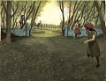
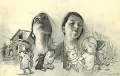
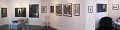
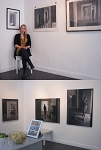
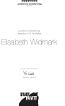

Anna Maria Elisabeth Vidmark
Bildkonstnär och frilansande illustratör.
| Född: | 1981-01-01 Klösan 2:1, Kåge, Kågedalens fs, Skellefteå kn. [1] |
|---|
| Levde: | 1991 Klösan 2:1, Kåge, Kågedalens fs, Skellefteå kn. [1] |
|---|
Noteringar
Elisabeth Widmark
Bildkonstnär och frilansande illustratör
Född 1981 i en liten by utanför Skellefteå, i norra Västerbotten. Bor i Holmsund men arbetar dagligen i min ateljé hos Kreativ Kollektiv på Pilgatan 13 i Umeå.
Är ni intresserade av att köpa eller ställa ut min konst? Eller är ni intresserade av att använda mig i ert projekt som illustratör?
Kontakta mig på: elisabeth.widmark@telia.com
Hej!
Jag heter Elisabeth Widmark och arbetar som frilansande illustratör och bildkonstnär. Men jag vill nog helst kalla mig enbart för tecknare, för det är det jag gör mest. Jag älskar att teckna. Jag arbetar gärna med bildberättelser, som i form av bokillustrationer, storyboards, serieteckning – eller som enstaka blyertsteckningar.
Mitt hjärta finns i norr, där jag bor i ett hus nära havet utanför Umeå. Jag spenderar gärna ledig tid med att vandra i fjällen och skogen. Där kan jag andas.
Som illustratör har jag arbetat tillsammans med bokförlag och företag. Mina kunder är bland andra Rabén & Sjögren, Nypon förlag, Idus förlag, Beta Pedagog, Västerbottens Läns Landsting, Region Västerbotten, reklambyrån Krux, T-shirt Store Umeå.
Jag är även verksam bildkonstnär och har deltagit med mina blyertsteckningar i flertalet separatutställningar och grupputställningar runt om i Sverige under de senaste åren. Mina verk finns även representerade hos bland andra Skellefteå Kommun, Norrbottens Läns Landsting, Västerbottens Läns Landsting samt konstföreningar.
Om du är nyfiken på att veta mer så titta gärna in på min hemsida!
www.elisabethwidmark.se
eller min Instagram: @elisawidmark
E-post: elisabeth.widmark@telia.com
Mina bilder handlar om ögonblick, till synes ganska vardagliga ögonblick. De utspelar sig i någons trappuppgång, i en övergiven stuga i Västerbottens inland, eller bland personer som jag känner och personer som jag flyktigt mött någon gång. Jag intresserar mig för det fysiska, det rumsliga och det man kan ta på. Men jag intresserar mig även för det outtalade, det som sker i tystnaden mellan två människor eller när atmosfären i rummet förändras. Vad händer då och vad sker med människorna i rummet?
Jag tecknar gärna stort. Min dröm är att någon dag få teckna en hel vägg, en vägg som blir ett nytt rum att kliva in i. Jag arbetar främst medier som blyerts, tusch, kol & olja, men jag vill inte stanna av utan jag utforskar ständigt nya vägar inom konsten.
"Jag gratulerar denna fina tecknare som med en nästan
surrealistisk och samtidigt realistisk blyertsteknik stilla och ömsint berättar om utsatthet och ensamhet" .
Berit Fradera - konstnär
"Elisabeth Widmarks bilder är skickligt gestaltade - förtätade ögonblick"
Landskrona Konstförening
www.elisabethwidmark.se
Illustration
Jag älskar att jobba med berättelser i mina bilder. Att skapa liv åt karaktärer, miljöer, stämningar och ta mig an era idéer och drömmar är mitt driv. Mina verktyg varierar mellan blyertspennor, oljefärger, tusch och en Wacom ritplatta. Men egentligen är teknikvalet underordnat– det är berättelsen och visionen som är viktig.
www.elisabethwidmark.se/illustration.html
Opublicerat
Illustrationer till pågående bilderboksprojekt, "Det skiftar i grått" en bilderbok som handlar om att förlora en anhörig i självmord, i samarbete med författaren Anna Sundström Lindmark. Projektet har även fått stöd från Konstnärsnämndens årliga projektbidrag 2016.
Skissbok
www.elisabethwidmark.se/skissbok.html
Utställning/CV
www.elisabethwidmark.se/utstaumlllning--cv.html
AKTUELLT
Separatutställning:
2015 - "Skuggspel", Lilla Galleriet, Umeå
2014 - "Skugglandet", Galleri Alva, Umeå
Samlings- & grupputställningar:
2017- Försommarsalong, Galleri Backlund, Göteborg
2015- "Fria linjer", grupputställning, Norrbyskärs museum
2015 - Invigningsutställning, Galleri Backlund, Göteborg
2014 - "Unga tecknare", Galleri Agardh & Tornvall, Stockholm
2014 - "40 år jubileum", Galleri Agardh & Tornvall, Stockholm
2014 - "Helvetet", Galleri Svalan, Öland, 2014
Jurybedömda utställningar:
2017 - "Tänkande handen", stipendietävling. Arrangörer: Kungliga Hovstaterna och Konstakademien.Stockholm
2015 - Jurybedömd Höstsalong, Edsvik Konsthall
2014 - Länssalong, Västerbottens Museum, Umeå
2013 - Svart på Vitt", Teckningstriennal, Landskrona Konsthall
2012 - Jurybedömd Vårsalong, Skellefteå Konsthall
2010 - Romele konsthall, jurybedömd sommarsalong
2008 - Konstfrämjandets vårsalong, Umeå Folkets Hus
Representerad
Västerbottens Läns Landsting, Landskrona Konstförening,
Skellefteå Kommun, Norrbottens Läns Landsting,
Böle Herrgård Konstförening
Stipendium/Utmärkelser
En av 10 utställare i stipendietävlingen "Den tänkande handen" på Kungliga Slottet, ett arrangemang mellan Kungliga Hovstaterna och Konstakademien. Utställningen visades i
Gustav IIIs antikmuseum, mellan 28 april till 25 juni 2017
Konstnärsnämndens projektbidrag 2016 för bilderboksprojektet "Det skiftar i grått" - ett samarbete med författaren Anna Sundström Lindmark
Umeå Skaparpris i kategorin "Årets bild" 2014
Landskrona Konstförening 2013 (10 000 kr)
Utbildningar
2017 - Bild & berättande, distanskurs HDK, Göteborg
2012 - Illustration, Distanskurs, Berghs SoC, Stockholm
2012 - "Figurepainting", sommarworkshop, Atelier Stockholm
2012 - Concept Art, 15hp, Högskolan på Gotland, 2012
2006-2008 - Falkenbergs konstskola
Samt kortare kurser i grafisk form, trycksaksproduktion och animation/rörlig grafik.
Medlemsskap
BUS, Svenska Tecknare, Illustratörcentrum
Illustrationsuppdrag
Räddningstjänsten Syd, Rabén & Sjögren, Länsbiblioteket Västerbotten, Nypon förlag, Beta Pedagog förlag, Alva Kultur, Idus förlag, Queenfish & Other tales, Kulturstorm, Umeå Universitet, Tshirt-Store Umeå, Kamratposten (Bonniers tidskrifter), Tidningen Vasaplan
****************************************************************************************
Personhistoria
| Årtal | Ålder | Händelse |
|---|
| 1981 |
|
Födelse 1981-01-01 Klösan 2:1, Kåge, Kågedalens fs, Skellefteå kn [1] |
| 1991 |
|
Levde 1991 Klösan 2:1, Kåge, Kågedalens fs, Skellefteå kn [1] |
Dokument
Källor
| [1] | Mantalslängd 1991, Västerbottens län |
| |
|
 |
Elisabeth Widmank
Fotograf: Lisa Raihle Rehback /Kungl. Hovstaterna
|
| |
|  |
2016. Elisabeth Widmark
Illustration till pågående bilderboksprojekt, "Det skiftar i grått" en bilderbok som handlar om att förlora en anhörig i självmord, i samarbete med författaren Anna Sundström Lindmark. Projektet har även fått stöd från Konstnärsnämndens årliga projektbidrag 2016.
|
| |
|  |
|
| |
|  |
2011-10. Elisabeth Widmark
Och så en ihopsvängd panoramavy över mina tavlor
:
elisabethwidmark.files.wordpress.com/2011/10/panoramahagmans.jpg
|
| |
|  |
2011-10.
elisabethwidmark.files.wordpress.com/2011/10/utst_hagmans2.jpg
|
| |
|  |
2013-04-22. Stipendium!
Så fantastiskt kul!!! Av 73 utställande konstnärer på Landskrona Konsthalls jurybedömda teckningstriennal så valde juryn ut mig till årets stipendiat!
”Landskrona konstförenings styrelse utsåg som sedvanligt en stipendiat som får 10 000 kr och ett diplom. Styrelsens val föll på Elisabeth Widmark, född 1981, från Holmsund, utanför Umeå, Norrland,
Styrelsens motivering löd:
Elisabeth Widmarks bilder är skickligt gestaltade – förtätade ögonblick.”
2010 års stipendiat Berit Fradera sade dessa fina ord vid uppvisandet av stipendiet:
”Jag gratulerar denna fina tecknare som med en nästan surrealistisk och samtidigt realistisk blyertsteknik stilla och ömsint berättar om utsatthet och ensamhet.”
www.landskronakonstforening.se/elisabeth-widmark-arets-stipendiat/
www.landskronakonstforening.se/svart-pa-vitt-i-bild/
|
|

{kind=link}
{kind=link}
{kind=link}
{kind=link}
{kind=link}